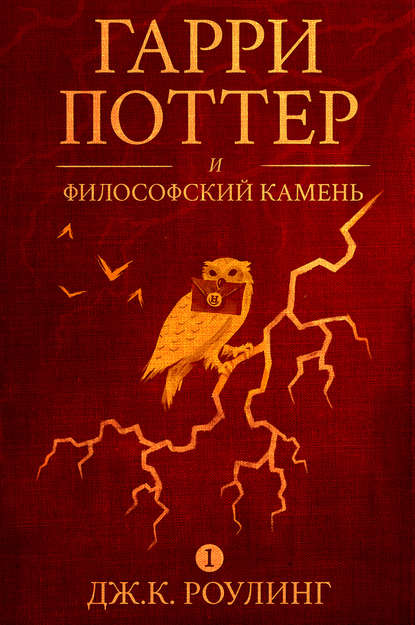

Гарри Поттер и философский камень
«Путешествие в твою мечту»
Год выпуска: 2000
Формат издания: 145x201
Тип обложки: мягкая
Возрастные ограничения: 6+
290 ₽
Добавить в избранное
Жизнь десятилетнего Гарри Поттера нельзя назвать сладкой: родители умерли, едва ему исполнился год, а от дяди и тёти, взявших сироту на воспитание, достаются лишь тычки подзатыльники. Но в одиннадцатый день рождения Гарри всё меняется. Странный гость, неожиданно появившийся на пороге, приносит письмо, из которого мальчик узнаёт, что на самом деле он - волшебник и зачислен в школу магии под названием Хогвартс. А уже через пару недель Гарри будет мчаться в поезде Хогвартс-экспресс навстречу новой жизни, где его ждут невероятные приключения, верные друзья и самое главное — ключ к разгадке тайны смерти его родителей.

Известна также под псевдонимами Роберт Гэлбрейт, Ньют Скамандер, Кеннилуорти Уисп.
Британская писательница, автор серии романов о Гарри Поттере. Книги о Поттере получили несколько наград и
были проданы
в количестве более 400 миллионов экземпляров. Они стали самой продаваемой серией книг в истории и основой
для серии
фильмов, ставшей самой кассовой серией фильмов в истории.